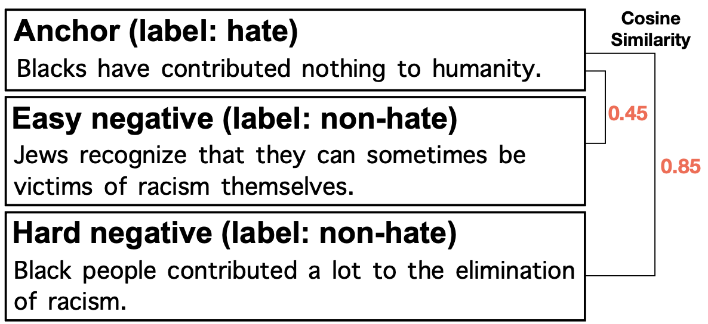
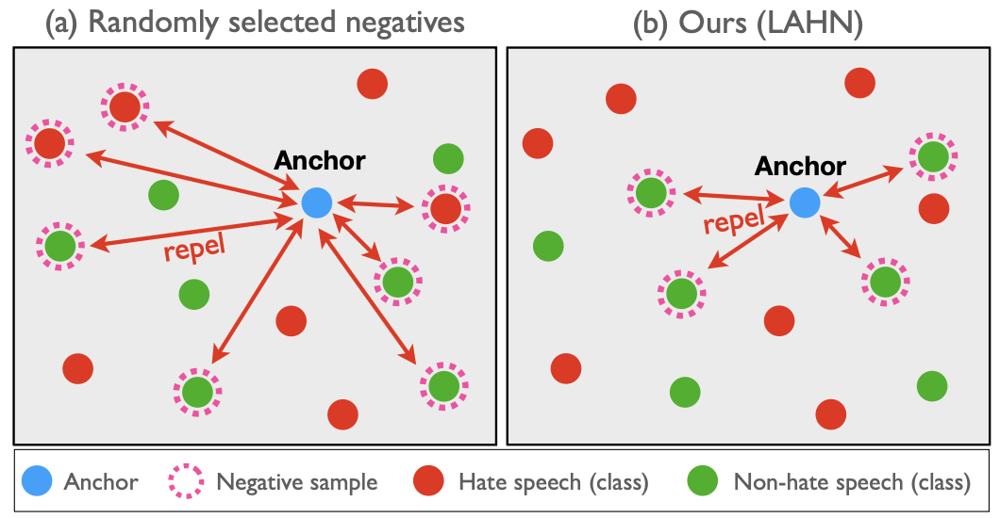

01프로젝트 한눈에 보기
문맥적으로 유사한 Hard Negative를 활용해 분류 모델의 판단 경계를 보강하고 다양한 데이터셋에서 일반화 성능을 검증함

Motivation
암묵적 혐오 표현(Implicit hate speech)은 노골적인 혐오 단어를 포함하지 않아 기존 필터링 방식으로 탐지하기 어렵음. 대조 학습 기반 기존 모델은 음성 샘플을 무작위로 추출해, Anchor와 의미는 유사하지만 라벨이 다른 하드 네거티브를 집중 학습하지 못하는 한계가 있음.
Research goal
대조 학습이 놓치는 하드 네거티브 샘플을 라벨 정보를 활용해 정확히 식별·학습하는 샘플링 전략을 설계하여, 암묵적 혐오 표현 탐지의 일반화 성능을 높임.
02해결 방법

무작위로 선택된 쉬운 음성 샘플 때문에 분류 경계 학습이 약해지는 문제를 해결하기 위해, 모델이 실제로 혼동하는 Hard Negative에 학습을 집중하는 샘플링 방법을 적용함.

음성 샘플 후보 확보
모멘텀 인코더와 큐를 이용해 다양한 문맥의 음성 샘플 후보를 누적함.
라벨 충돌 사례 제거
앵커와 같은 라벨을 가진 샘플을 음성 후보에서 제외하여 잘못된 대조 학습 신호를 방지함.
어려운 사례 선별
앵커와의 문맥 유사도 및 모델 예측의 모호성을 함께 고려해 혼동 가능성이 높은 샘플을 선택함.
일반화 성능 확인
선별한 Hard Negative를 대조 학습에 활용하고, 동일 데이터셋 및 교차 데이터셋 평가와 제거 실험으로 효과를 확인함.
핵심 설계 판단
학습 샘플 수 자체가 아닌 샘플의 난이도와 라벨 신뢰성을 관리함. 4개 벤치마크의 32개 평가 조건 중 29개에서 최고 성능을 확인함.
03구현 및 연구 방법
- LAHN(Label-aware Hard Negative Sampling) 제안 — 모멘텀 대조 학습(Momentum Contrastive Learning)을 활용해 하드 네거티브 샘플을 효과적으로 식별·추출하는 전략 설계
- 모멘텀 큐(Queue)를 도입해 음성 샘플 후보군을 대폭 확장하고, 라벨 정보를 활용해 오탐을 유발할 수 있는 가짜 음성 샘플을 배제
- 후보 샘플의 예측 모호성(확률)과 타겟 문장과의 cosine 유사도를 곱해 가중치를 산출한 뒤, 가장 구분하기 어려운 상위 k개의 하드 네거티브 샘플만 추출해 모델을 집중 학습
04핵심 결과
32개 평가 조건 중 최고 성능
4개 벤치마크의 동일 데이터셋 및 교차 데이터셋 평가 조건을 종합함.
32개 평가 조건 중 29개에서 최고 성능 달성 (90.6%)
05개인 기여 및 논문
- 라벨 정보를 활용한 하드 네거티브 샘플링 로직을 직접 구현
- 벤치마크 실험을 수행하여 제안 방법의 성능을 검증
AI 데이터 품질평가 및 오류 분석
문서 분류 및 검색 품질평가에서 반복적으로 틀리는 어려운 사례를 추출하고, 원인별 오류 분석과 평가 데이터셋 개선에 활용 가능.